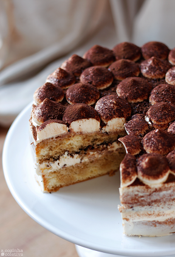
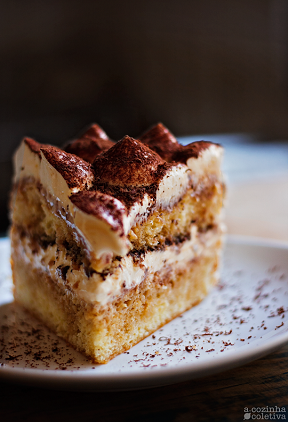
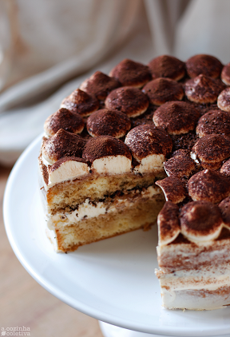
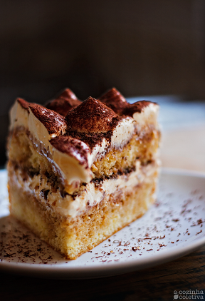

BEST-EVER TIRAMISU
Back home
Dessert pictures
 



Ingredients
Cake&Cream
- 3 eggs, yolks and whites separated
- 1/2 cup caster sugar (known as super fine / baker's sugar in the US)
- 1/2tsp vanilla extract
- 8 oz / 250g mascarpone
- 1 1/4 cups hot espresso coffee - strong!
- 2 tbsp (or more!) of liquor of choice - I like Frangelico and Kahlua
- 6.5oz/200g lady fingers (24 - 30), pavesini or savoiardi biscuits (Note 2)
- Cocoa, for dusting
Directions
- Beat yolks and sugar in stand mixer on medium high for 12 minutes or until white and thick.
- Add vanilla and mascarpone, beat until just combined. Transfer mixture to a bowl, set aside.
- Clean bowl and whisk. Beat egg whites until stiff.
- Fold 1/3 of the yolk mixture into the egg whites. Then gradually fold the remaining yolk mixture in and mix until just combined.
- Mix coffee and liquor together. Quickly dip biscuits in and line the bottom of a 8 20cm square dish. (See video to see how I arrange them).
- Spread over half the cream, then top with another layer of coffee dipped biscuits.
- Spread with remaining cream.
- Cover, refrigerate for at least 3 hours, preferably overnight
- Dust with cocoa powder just before serving - either before you cut or after placing onto serving plates.